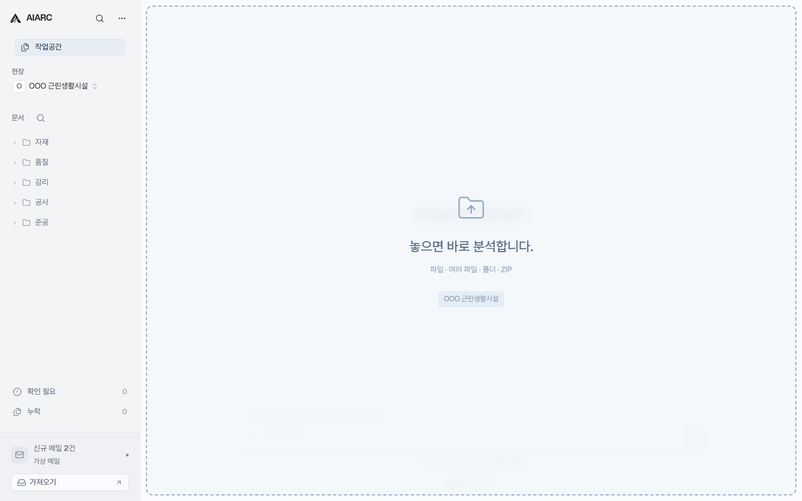

Architecture AI · 현재 진입점: 준공 문서 자동화
건축 프로젝트의 상태를 읽고,
다음 일을 시작하는 AI.
흩어진 문서·도면·메일·변경 흔적을 연결해,
프로젝트의 현재 상태를 이해하고 다음 업무까지 이어가는 AI를 지향합니다.
현재 0.6.0은 샘플 기반 데모입니다. AI 분석과 메일 가져오기는 준비된 결과로 시연합니다.
착공부터 준공까지, 같은 작업공간에서.
프로젝트의 현재 상태는
한곳에 기록되어 있지 않습니다.
도면, HWP, PDF, Excel, 이메일, 사진, BIM, 승인 기록과 변경본이 흩어져 있고, 사람은 이를 직접 찾아 비교하고 정리해 왔습니다.
AIARC가 관리하려는 기본 단위는 파일이나 한 사람의 업무가 아니라 프로젝트의 현재 상태입니다.
첫 번째 진입점,
준공 문서 자동화.
프로젝트 전 과정의 결과물이 모이는 준공 단계.
문서 정리와 누락 검토에서 시작합니다.

파일 이름과 형식을 확인하고, 분석을 시작합니다.
판단과 원문 근거를
함께 확인합니다.
공종별로 모인 서류를 한눈에.
펼치면 분류 이유, 누르면 원문 근거까지.
정상 문서에도 근거를.문서 트리를 뒤지지 않고, 판단에 쓰인 항목으로 바로.
분류와 내용 검토를 구분.분류된 문서의 불일치와, 분류를 보류한 자료를 따로.
실제 서식의 모습 그대로.품질관리서·승인원·시험성적서. 내용은 OOO·XXX인 가상 자료.
누락과 불일치에서
문제 근거 확인까지.
“제품명이 다릅니다.”에서 끝나지 않도록.
메시지에서 해당 문서의 해당 항목으로 이어집니다.
문서를 읽는 순간에도,
대화는 자연스럽게.
필요한 만큼 펼치는 대화
문서는 넓게, 대화는 필요한 만큼. 경계를 끌어 대화의 노출량을 조절할 수 있습니다.
현장만 바꾸면 이어지는 업무
본사와 현장의 화면을 따로 배우지 않아도 됩니다. 왼쪽 현장 선택기로 작업할 현장을 바꿉니다.
확인할 항목만 모아서
누락과 확인 필요 항목에서 관련 문서와 근거로 바로 이동합니다.
이미 사용하는 폴더와 메일,
기존 업무환경 위에서.
메일로 도착한 서류도 현장 문서함으로.
가져올 문서와 정리할 현장을 먼저 확인합니다.
메일 가져오기는 현재 데모로 제공됩니다. 실제 계정 연동은 준비 중입니다.
현재 단계: 제품 시연
개발 기록원문 근거가 보이는 문서 정리
실제 서식 기반 데모 문서, 펼쳐 보는 분류 근거, 더 읽기 편한 화면.
지금 체험할 수 있는 범위
현재는 샘플 데이터를 사용하는 제품 시연 버전입니다. 파일 감지와 화면 조작은 동작하며, 문서는 실제 서식을 보존하거나 재현한 PDF 미리보기이며, 내용은 가상입니다. AI 분류·누락 탐지·메일 가져오기는 데모 결과를 사용합니다. 실제 AI 분석과 HWP/HWPX 처리, 메일 계정 연동은 이후 연결됩니다. 데모는 원본 문서를 수정하지 않습니다.
준공 문서 자동화,
데모로 확인하세요.
AIARC for Windows